Feel the lap
A six-axis motion platform, driven by car simulator signals.
It moves throughout the lap
Braking, turning, every bump in the road — the platform leans, lifts and turns under the rider, from the game's own telemetry.
Six arms, one seat
Six motors turn six cranks, carrying the platform. Between them, every way a car can move.
Made to fit
Adjustable pedals and steering wheel improve driving comfort.
How it works
From the game to the seat.

- 01Game telemetryThe game provides vehicle telemetry.
- 02Motion cueingFilters keep what a driver can feel.
- 03KinematicsThe expected seat pose determines the angle of each of the six cranks.
- 04ControlA controller turns six angles into six motors' commands.
- 05ActuationSix servo motors turn six cranks.
- 06The platformSix rods move the seat — and the rider with it.
Developed utilizing the potential of AI agents
Virtual analysis is performed on SPASIX to optimize materials and cost, with AI agents working alongside the development engineer: they help subject it to the hardest test a lap can present, measure structural deflection, and remove material until every component holds within its margin.